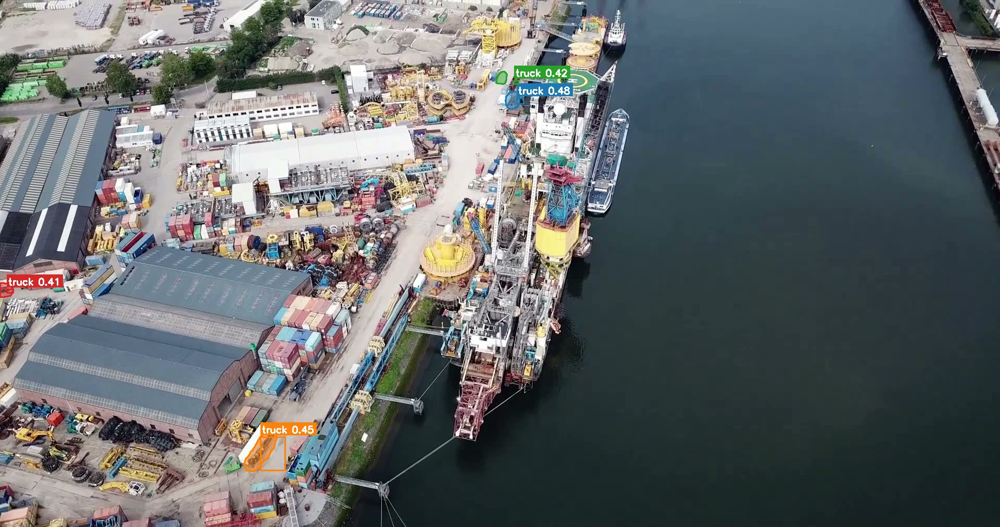
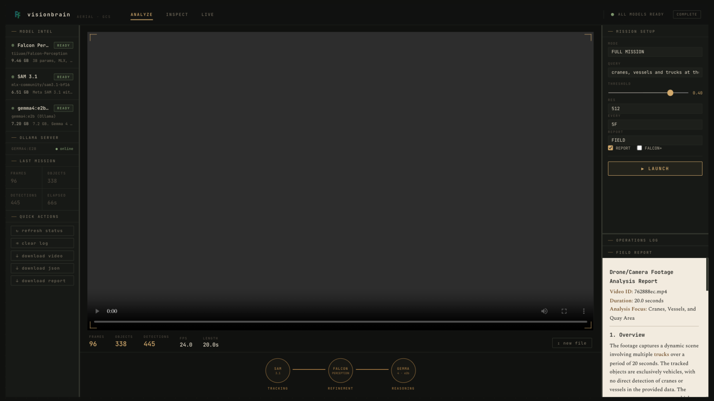
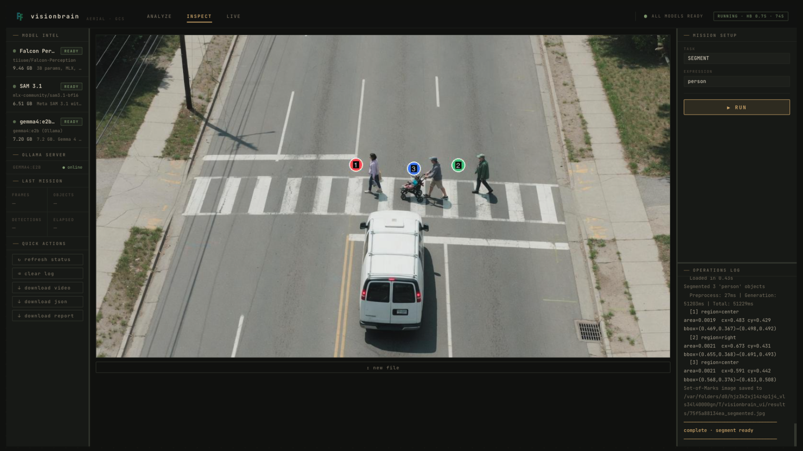
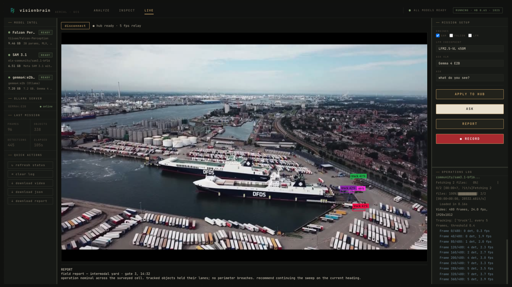

three vision models stitched into one pipeline — tracking, grounding, reasoning — over drone and camera footage, entirely on apple silicon. no cloud round-trip, no per-seat pricing, no footage leaving the building. an operator's instrument, not a saas dashboard.

type "vessels and trucks at the quay" — the router splits your sentence into tracking targets for sam 3.1 and a semantic question for gemma. you get back the triad ops teams actually need.


480-frame quay clip → 96 frames processed · 338 objects tracked · field report written

falcon segmentation with set-of-marks rendering — detect, segment, sam-3, ocr

intermodal yard · gate 3 — ws relay at 5 fps, zone counters, direction tracking
the live tab talks straight to field hardware over an observer relay — detection hud, telemetry, ask-the-scene q&a, field reports on demand, and a client-side annotated recording of exactly what the operator saw.
◆ SHIPPED — RUNNING TODAY
- full pipeline — sam 3.1 track → falcon refine → gemma report, from one query
- ground control ui — analyze · inspect · live panes, resizable operator layout
- live field hub — observer relay, detection hud, ask-the-scene, reports, annotated recording
- fastscan — "is it there?" answered in under a minute; full pipeline continues behind it
- structured video — chunked processing for long recordings, adaptive sampling flags
- field primitives — zone counters (line + polygon), 8-way direction tracking, persistent identity
- api + cli — visionbrain detect | segment | ocr | track | analyze | fastscan | status
◇ IN PROGRESS · THEN DIRECTION
- hardening the fast path — quick-answer-first runs the full pipeline behind it (spec'd, flags live in the ui)
- alert rules on zones — dwell, loiter, wrong-way, perimeter breach → webhook on event
- hub federation — one dashboard, n field relays, per-feed engine control
- thermal + low-light profiles — night patrols without retuning queries
- scheduled sweeps — waypoint missions with per-leg queries
- report templates per vertical — port ops, terminals, corridors, perimeters
berth oversight without shipping footage ashore. vessels, cranes, and truck traffic from one query.
gate-to-gate truck counts, dwell time, and lane discipline — each a single question.
every overpass, every sweep, written up before the drone lands.
live hub + zones + direction tracking: a fence that writes its own log.